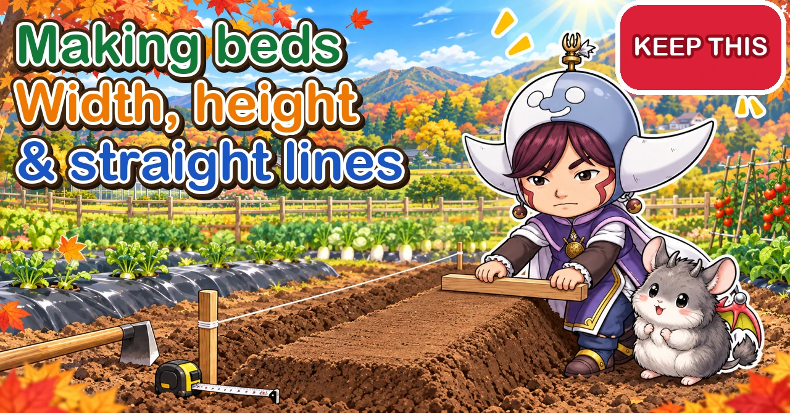
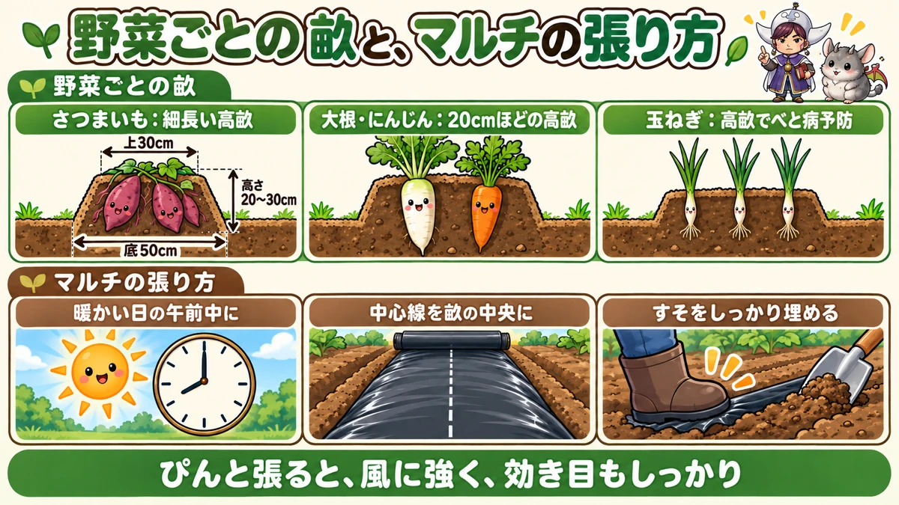

Garden beds 🌱 The complete guide to width, height and mulch

🌱 "How wide and high should I make the bed?"
🌱 "I tried to make a straight bed, but it bends and collapses after rain."
🌱 "Water collects in the path, and my mulch keeps sagging."
Hello, I'm Eiko. Eight years of growing vegetables organically and without pesticides, and a teaching licence in science.
A garden bed is the foundation of a vegetable plot. It gives roots a deep, loose layer of soil, lets excess water drain away, warms the ground, and leaves a path where you can work without treading on the growing area. This guide takes you from planning the plot to building a straight bed, choosing a height for each crop, laying mulch, and dealing with a plot that stays wet.
Where you are: the seasonal timings here are for central Japan. Shift them to your own climate, rainfall and planting dates. A Japanese garden bed may be a raised row in an open plot, or a contained raised bed; the same principles apply.
The essentials: start with about 60–70 cm of bed width and 10–20 cm of height, with a 40–50 cm path. Make a wet plot or a crop that dislikes wet soil 20–30 cm high. Mark the edges with string, bring soil up from the paths without digging them into deep trenches, level the top with a board, and lay plastic mulch on a warm morning so it stays taut.
① The basic measurements
Width
- General starting point: 60–70 cm
- Summer crops such as tomatoes, aubergines, peppers and cucumbers: at least 60 cm, because their roots spread widely
- Sweet potatoes: a long, narrow bed, about 50 cm wide at the base
- Pumpkins and watermelons: allow extra room for vines; count the bed and the path together and let the vines run out of the plot
Height
- A nearly flat bed: about 10 cm
- The usual bed: 15–20 cm
- A raised bed: 20–30 cm where drainage is poor, rain is heavy, or the crop dislikes wet soil
Length and paths
Length is whatever fits the plot. A short bed of about 160 cm is common in a small home plot. For a long bed, stretch string first so the edges stay straight. Leave a path about 40–50 cm wide, enough for a person to walk and work. If you will earth up potatoes or other crops, make the path wider so there is soil to bring up.

What this diagram says （図解の文字）
- The purpose, width and height of a bed
- "Bed width: 60–70 cm" ／ "Path: 40–50 cm" ／ "Raised bed: 20–30 cm" ／ "10–20 cm"
- "Improve drainage" ／ "Make room for roots to grow deep" ／ "Raise soil temperature"
- "Summer vegetables: at least 60 cm wide; crops that dislike wet soil: use a raised bed"
② What a garden bed is for
A bed is a long, slightly raised strip of soil in which vegetables are planted. The lower strips around it are paths. Separating the two makes the plot easier to understand and keeps feet off the soil where roots will grow.
- Drainage: rain runs from the raised surface towards the lower path instead of sitting around the roots. This reduces waterlogging, root rot and some diseases.
- Rooting depth: adding loose soil gives roots a deeper workable layer, or topsoil, even when the ground below is hard. This is particularly useful for daikon and burdock that need to grow downwards.
- Soil temperature: a raised surface receives more sun and warms sooner, which can help in early spring and cool autumn weather.
- Easy work: you can walk in the path, see where each crop is planted and avoid compacting the growing soil.
③ Tools and a simple plot plan
Useful tools
- Hoe: a flat hoe handles most jobs—moving and levelling soil and cutting a drain. A three-tine digging hoe breaks hard clods; a light triangular hoe is handy for narrow drains and detail work.
- Spade: use a pointed spade to open the soil deeply.
- String and pegs: pegs, mulch pins or even chopsticks can mark the four corners.
- Board, rake or levelling board: a scrap of plywood is enough to flatten the top.
- Tape measure: mark 10 cm divisions on a hoe handle so width, height and spacing are easy to check.
Calculate the space
One bed needs its bed width plus its path width. A 60 cm bed and a 40 cm path take 1 m of plot width. Divide the width of your plot by that figure to estimate how many beds fit. Draw the layout on paper before digging. It prevents a missing bed or a path too narrow to walk.
Put tall crops such as tomatoes, cucumbers and sweetcorn on the north side so they do not shade shorter crops. Put pumpkins and watermelons at the edge, where their vines can escape. Rotate plant families rather than growing the same family in the same place every year, and record what was planted where.
④ Prepare the soil before shaping the bed
Loosen deeply first
Before building the bed, dig to about 30 cm with a spade and break up clods. A three-tine hoe can make finer work of hard soil. Deep preparation now means that later you only need to mix feed into the upper 10–15 cm.
Remove stones and old roots
As you dig, take out stones, thick roots from the previous crop and weed roots.
Spread compost and base fertiliser evenly
Spread compost and the base fertiliser across the whole future bed, right to both edges—not only down the centre. Roots can reach the edges within a month. Leave roughly two weeks after feeding for the soil to settle before planting. If lime is needed, apply it first and allow two to three weeks before adding compost or fertiliser.
Do not walk on the worked soil
Freshly loosened soil is full of spaces for air and water. A foot compresses those spaces into a hard layer, so work from the path or straddle the bed rather than standing on it.
⑤ Build a straight bed step by step
- Mark the line. Put pegs at the four corners and stretch string between them. The longer the bed, the more difference the string makes.
- Mix the base fertiliser. Work it into the marked area to a depth of about 10–15 cm, without standing on the bed.
- Bring up path soil. Hoe soil from each side of the path onto the bed, alternating sides so the bed rises evenly.
- Reach the target height. Aim for 10–20 cm for a normal bed, or 20–30 cm for a raised bed.
- Level with a board. A flat top avoids puddles and makes plastic mulch sit neatly. Break clods or bury them.
- Firm the sides. Tap the sides lightly with the back of the hoe or a board so rain will not wash them away.
- Cut a drain when needed. In poorly drained soil, cut a drain about 10 cm deep in the path around the bed. It should carry water away rather than leave it sitting beside the roots.

What this diagram says （図解の文字）
- Steps for building a bed
- "1 Stretch string to mark the line" ／ "2 Spread compost and base fertiliser to the edges" ／ "3 Bring up path soil"
- "4 Level with a board" ／ "5 Firm the sides" ／ "6 Cut a drain if drainage is poor"
- "Do not dig the paths down; build up with air in the soil"
⑥ Finishing a bed for sowing and flat beds
For direct sowing
Seed beds need a finer, flatter surface than beds for transplants. Crumbly soil lets the seed touch the soil evenly. If the soil is bone dry, water the day before sowing so germination is more even. For a row, press the corner of a board into the surface to make a shallow, straight drill of consistent depth.
When a flat bed is right
A flat bed is almost level with its surroundings. It suits ground that already drains well, a dry period, or vegetables that like some moisture. Mark the area with string, mix in the feed and level it; then press the edge lightly so the path boundary is clear. You still avoid walking in the growing area.
Small measuring aids
Mark 10 cm intervals on a hoe handle, tie knots in string at the desired plant spacing, and mark the width on the levelling board. These simple guides make repeated beds more consistent.
⑦ How to make and manage a high bed
Fluff the soil instead of digging a deep path
Do not excavate the path into a trench to obtain height. Break the soil and let air into it, then build it up loosely. The same soil can occupy about twice the volume once it is crumbled and aerated, so a high bed can rise naturally without a deep ditch that collects water.
Keep the top suitable for the crop
A rounded top sheds rain quickly. A flat top lets water soak in more evenly when there is no mulch or when sowing seed. Sweet potatoes dislike wet soil, so a slightly rounded top is fine for them.
Build in stages and watch moisture
Adding all the soil at once makes the sides collapse. Bring soil up in stages, pressing it lightly each time. A high bed drains well but dries quickly, so use mulch or water the path during dry summer weather.
⑧ Match the bed to the soil and weather
Clay-like soil
Water enters slowly and the plot turns muddy after rain. Make the bed higher, cut a drain around it, and work in compost or rice hulls gradually to improve drainage.
Sandy soil
Water drains too quickly. Keep the bed lower, add compost to improve water-holding, and use mulch or straw to slow drying.
A former paddy field
The water table may be high and water may seep up after prolonged rain. Raise the bed and deepen the surrounding drains so water has somewhere to go.
Read the plot after rain
Low spots stay wet while high spots dry first. Walk the plot after rain, then use a higher bed in the wet spots and a lower one in dry spots.
⑨ Crop-by-crop bed heights
- Tomatoes, aubergines, peppers and cucumbers: at least 60 cm wide, about 15 cm high, with 50–60 cm between plants. Mulch is often useful.
- Daikon, carrots and burdock: about 20 cm high; remove stones and hard clods so roots do not fork or bend.
- Sweet potatoes: a long trapezoidal ridge, about 50 cm wide at the base, 30 cm at the top and 20–30 cm high. A narrow, airy bed helps the tubers; 20 cm is acceptable if a taller bed is difficult.
- Potatoes: at least 15 cm if you will mulch instead of earth up, with good drainage so seed potatoes do not rot.
- Onions: 20–30 cm high and carefully levelled; good drainage helps reduce downy mildew after spring rain.
- Soybeans, beans and peanuts: normal to slightly high. Keep the surface loose for peanuts, whose flower stalks enter the soil to make pods.
- Broad beans and peas: a well-drained bed prevents winter rain from damaging roots.
- Cabbage, Chinese cabbage and broccoli: a little higher in autumn, when typhoons and heavy rain are more likely.
- Leafy greens: 10–15 cm is usually enough; raise it slightly in a wet plot.
- Taro and ginger: they like moisture, so use an ordinary-height bed rather than one so high that it dries out.

What this diagram says （図解の文字）
- Crop-specific beds and how to lay mulch
- "Sweet potato: long raised bed" ／ "Base 50 cm, top 30 cm, height 20–30 cm" ／ "Daikon and carrot: about 20 cm high"
- "Onion: high bed to prevent downy mildew"
- "On a warm morning" ／ "Put the centre line in the centre of the bed" ／ "Bury the edges firmly"
- "Pull it taut: stronger against wind and more effective"
⑩ Choosing and laying mulch
What mulch does
- It keeps moisture steadier, reducing the swing between dry soil and sudden absorption.
- Black plastic warms the soil and suppresses weeds.
- It stops muddy rain splash and helps prevent some disease.
- It protects the soil surface from being beaten hard by rain.
- It makes it harder for chafer beetles and similar insects to lay eggs in the soil.
Mulch is less suitable where you need to earth up, such as Japanese bunching onions or the later stages of taro, or for moisture-loving crops that you water frequently. Black film can overheat the soil in hot weather. Clear film warms most strongly but lets weeds grow. White or silver film warms less; silver reflects light and may discourage aphids.
Perforated film is convenient for onions and other crops planted at regular spacing. Choose holes that match the intended spacing.
The right time and method
- On a warm morning, make shallow furrows at both bed edges where the film will be buried.
- Spread the film with its centre line over the centre of the bed.
- Bury one end to anchor it.
- Pull the film a little at a time, smoothing out wrinkles.
- Hold the edge with one foot, cover it with soil using the other foot or a hoe, and firm it down.
- Add mulch pins where needed.
Warm film is stretched. It tightens as it cools; film laid in cold weather can sag when it warms. A taut sheet lies against the bed, does not flap, warms the soil consistently and leaves fewer gaps for insects. Make planting holes only a little larger than the transplant pot, using a hole punch or the rim of a tin. Large holes invite weeds and reduce the mulch effect.
⑪ Raised beds for ground that stays wet
Some plots form puddles after every shower even when you cut drains. In that case, surround the bed with an edging board or corrugated edging sheet and build a contained raised bed above the original ground. Mix the native soil with bark compost, rice hulls and leaf mould to improve drainage, then let it settle before planting. Rice hulls are especially useful for opening heavy soil.
A wooden frame helps a beginner make a straight, tidy bed. Fill the frame, press the sides lightly, and either lift the frame away or leave it in place in a garden. A permanent frame also helps keep fertiliser from washing away, but wooden boards eventually rot and need checking and replacement.
⑫ Look for pests while you build
Digging may expose chafer grubs, cutworms and other pests overwintering in the soil. Pick them out before planting. When removing old mulch, loosen the surface and look underneath too.
Do not remove every creature. Legless pale larvae, shiny black ground beetles and earthworms may eat other insects or improve the soil; return them to the bed.
⑬ Two ways to feed when time is short
Planting-hole feeding
If you cannot mix base fertiliser through the whole bed, dig a hole about 20 cm deep at each planting place, put fertiliser in the bottom, cover it well with soil and plant above it. Early growth may be weaker than in a fully prepared bed, and fertiliser must never touch the roots. Preparing the whole bed at least two weeks before planting remains preferable.
Trench feeding
When autumn planting is close and preparation is late, dig a central trench about 20–30 cm deep, mix compost and fertiliser into it, return the soil and shape the bed. Plant over the centre. It is an emergency way to feed below the roots while keeping the planting date.
⑭ Care after the bed is built
Inspect after heavy rain
Check for collapsed sides, standing water in the paths and lifted film. Repair a collapse after the soil has dried enough to handle, using soil from the path. Deepen a drain or raise the next bed if the same place stays wet.
Keep paths open
Rain and feet compact paths and stop water draining. On a dry day, insert a spade deeply and rock it gently to open the soil. A weed-control sheet makes paths easier to walk, reduces mud and stops sweet-potato vines tangling in path weeds. Straw or cut grass also suppresses weeds and splash, but a very thick layer can shelter slugs and woodlice. Paths used for earthing up should stay workable.
Repair mulch and clear the crop
Cover a spreading tear around a planting hole with soil and pull small weeds before they grow. Once harvest is over, remove old plants, roots and film. If there is time before the next crop, dig the soil and expose it to cold and sun, then add compost and feed suited to the next crop and rebuild the bed.
⑮ Where to put plants
Plant one row down the centre of a bed as the default. A wide bed can take two staggered rows so leaves overlap less. For cucumbers and other crops trained to a net along one side, plant slightly towards that side to make tying in easier.
Plan the length from the number of plants: summer crops need about 50–60 cm between plants, cabbages, Chinese cabbages and broccoli about 40–45 cm, and leafy greens can be thinned after sowing.
⑯ The seasons in central Japan
- February–March: make potato beds and begin soil preparation for spring and summer crops.
- March–April: build summer-crop beds and lay mulch about two weeks before planting.
- April–May: build sweet-potato high beds.
- August–September: make autumn and winter beds a little high to prepare for typhoons and heavy rain.
- October–November: make high beds for onions and beds for broad beans and peas.
- After heavy rain: inspect the sides, paths, drains and mulch.
In spring, a raised bed with black mulch warms the soil and helps transplants establish, while drainage prepares for long spring rain. From the rainy season into summer, drainage still matters, but high beds dry quickly, so mulch or straw helps. In autumn, use slightly higher beds for typhoons. In winter, keep good drainage for onions, garlic and broad beans; rice hulls around the base can help prevent frost heave.
⑰ Advice that depends on the plot
North–south or east–west?
North–south beds receive sun on both sides through the day, which can make growth even. East–west beds may catch low winter sun, and putting tall plants on the north side reduces shade. In a home plot, the shape of the ground often decides. The important point is to arrange tall crops so they do not shade low crops.
High or flat?
Use a low, nearly flat bed in soil that drains well, in a dry season, or for a crop that likes moisture. Use a high bed in wet soil, heavy rain, or for a crop that dislikes wet roots. There is no single correct height.
⑱ A final layout check
Place the bed before placing the plants
Measure the plot, draw every bed and path, and decide how many plants will fit before you lift a hoe. A bed is not only a strip of soil; it is a strip of soil plus a working path. Leaving the path out of the plan is how a plot ends up with one more bed than it can comfortably support.
Keep the planting line practical
One central row is simplest. If a bed is wide enough for two rows, stagger the plants rather than putting them directly opposite one another; leaves overlap less and air can move between them. A net for cucumbers or similar climbers is easiest to manage when the row is a little towards the net side.
Use the path as a resource
The path supplies soil for the initial bed and later for earthing up. Keep it at a consistent width so one section is not awkwardly narrow while another wastes space. A weed-control sheet makes walking easier after rain. Straw or cut grass also works, but do not spread it so thickly that slugs and woodlice get a cool hiding place.
Do not forget the next crop
After harvest, clear old roots and film, then decide whether the next crop needs a different height. A bed can stay in the same place, but plant families should be rotated. Record the crop and date on your plot plan so the next bed is based on what actually grew there.
⑲ More questions about making beds
How long does it take?
It depends on the plot size, how hard the soil is and which tools you have. One short bed can take longer than expected at first. Once the sequence becomes familiar it is much faster. On very hard ground, separate deep digging and bed shaping over different days to reduce strain.
What if rain has washed one side away?
Wait until the soil is neither muddy nor dusty. Use soil from the path to rebuild the side, then firm it with the back of the hoe or a board. A mulch sheet also protects the surface from direct rain.
Can a bed height vary along its length?
It is better to decide the crop and season first and make the height consistent. If a planted bed later drains badly, improve the path drain or loosen the path instead of piling soil against established stems.
Is a wooden frame necessary?
No. An open bed is enough for most plots. A frame is useful where the ground stays wet, where a beginner needs a straight edge, or where soil needs to be held above the original level. Check a wooden frame for rot as the seasons pass.
Can a person with little strength build one?
Yes. Work in short sessions, start with one small bed, and use a frame if moving soil with a hoe is difficult. Breaking the work into several days is kinder to the body and does not change the final result.
⑳ Common mistakes
Digging the path deep to make a high bed
Deep paths become water channels. Fluff and build the soil instead.
Walking on the bed
Work from the path or straddle it so the rooting spaces stay open.
Putting feed only in the centre
Roots reach the edges and then run out of food. Spread it evenly.
Leaving a lumpy surface
Level with a board to prevent puddles and make mulch fit.
Laying film in cold weather
It sags when warm. Lay it on a warm morning; if it has sagged, loosen the edge and retension it.
Planting straight after feeding
Let the soil settle for about two weeks so roots are not damaged.
Building a long bed without string
Small errors add up and the bed bends. Stretch a line first.
Making a summer bed too narrow
Give widely rooting crops at least 60 cm.
㉑ Questions
Do I rebuild a bed every time I change crops?
Usually, yes: loosen the soil, add compost and feed, and reshape it. Rotate plant families as you do so.
How do I measure the height?
Measure from the path surface to the top of the bed with a ruler or tape. With practice, a hoe blade becomes a useful rough guide.
My hoe is awkward
Strike down from above to break the soil rather than dragging it towards you. The same motion mixes feed more evenly.
Can I build a bed if I am older or not strong?
Split deep digging over several days, start with one short bed, or use a wooden frame to reduce heavy hoeing. A small bed is a good way to learn.
Can I change the height after planting?
It is difficult to raise a planted bed. Choose the height before planting; afterwards improve drainage with a path drain or loosened path soil.
What can contain a raised bed?
Corrugated edging, wooden boards, bricks or blocks can work. Check wood for rot and replace it when needed.
Can I plant without a bed?
Yes, in well-drained ground during a dry period with a moisture-loving crop. In wet ground or rainy weather, even a low bed is safer.
Do containers need beds?
No. Use drainage material at the bottom where appropriate and keep the potting mix surface level.
🔬 The science: why raised, loose soil helps
Why water drains away: water flows downhill. A raised surface sheds rain towards the path, and the root zone sits farther above the underground water table.
Why loose soil becomes high: compact soil has few spaces between particles. Hoeing creates air gaps, increasing the volume of the same soil—sometimes to about twice its packed volume. Those gaps are routes for roots, air and water.
Why a deep topsoil layer matters: roots travel through loose soil but turn sideways or stop when they hit a hard layer. A deeper layer gives them more water and nutrients and helps them cope with summer dryness. Forked daikon, carrots and burdock often meet a hard obstruction.
Why not to tread on it: body weight is concentrated through a small foot area. It crushes the air spaces, and rain then seals the soil tighter. Fixed paths protect the root zone.
Why beds warm: a mound has more sun-facing surface than flat ground, and airy soil warms readily. Black mulch absorbs more sunlight and raises the soil temperature further.
To sum up
- ✅ A bed improves drainage, rooting depth, soil warmth and access to the crop.
- ✅ Start with 60–70 cm width, 10–20 cm height and a 40–50 cm path; use 20–30 cm for wet ground or crops that dislike wet soil.
- ✅ Mark string lines, bring up path soil, level with a board, firm the sides and cut a drain when necessary.
- ✅ Make high beds by aerating and building soil, not by digging deep water-holding trenches.
- ✅ Match height to the crop: daikon, carrots, burdock, sweet potatoes and onions need more height; taro and ginger do not.
- ✅ Lay mulch on a warm morning, centre it, pull it taut and bury the edges firmly.
- ✅ In a persistently wet plot, use an edged, raised bed with compost, rice hulls or leaf mould.
- ✅ Keep paths usable, inspect after rain, rotate crops and avoid walking on the bed.
Thank you for reading all the way to the end! Next time you build a bed, start by stretching one line of string. That small step makes a straight, tidy bed much easier to create 🌱
Thank you for reading!